In chapter 3 we introduced the incidence structures of polygonal complexes. Along with this we can consider various properties of surfaces and complexes that rely on the incidence structure. In section 9.1 some invariants of polygonal complexes are explained. Section 9.2 describes properties based on the degree of the vertices. Different types of faces, edges and vertices are introduced in section 9.3, 9.4 and 9.5.
We will showcase these properties on several examples. One of them is the five-star:
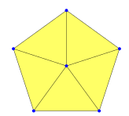
gap> fiveStar := SimplicialSurfaceByVerticesInFaces( [1,2,3,5,7,11], 5, > [ [1,2,3], [1,3,5], [1,5,7], [1,7,11], [1,2,11] ] );;
Another one is the triforce:
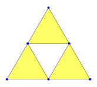
gap> triforce := PolygonalComplexByVerticesInFaces([[1,2,3],[2,4,5],[3,5,6]]);;
This section introduces invariants of (twisted) polygonal complexes. Invariants of (twisted) polygonal complexes are properties that are equal for each (twisted) polygonal complex in the same isomorphism class. Examples of such invariants are the Euler-characteristic 9.1-1, whether a complex is closed or open 9.1-2 and some other properties about multi tetrahedral spheres.
‣ EulerCharacteristic( complex ) | ( attribute ) |
Returns: an integer
Return the Euler-characteristic of the given twisted polygonal complex. The Euler-characteristic is computed as
gap> NumberOfVertices(complex) - NumberOfEdges(complex) + NumberOfFaces(complex);
As an example, consider the five-star that was introduced at the start of chapter 9:
gap> NumberOfVertices(fiveStar); 6 gap> NumberOfEdges(fiveStar); 10 gap> NumberOfFaces(fiveStar); 5 gap> EulerCharacteristic(fiveStar); 1
‣ IsClosedComplex( complex ) | ( property ) |
‣ IsClosedSurface( surf ) | ( property ) |
Returns: true or false
Check whether the given twisted polygonal complex without edge ramifications is closed. A twisted polygonal complex without edge ramifications is closed if every edge is incident to exactly two faces (whereas the absence of edge ramifications only means that every edge is incident to at most two faces).
For example, the platonic solids are closed.
gap> IsClosedSurface( Octahedron() ); true gap> IsClosedSurface( Dodecahedron() ); true
In contrast, the five-star and the triforce from the start of chapter 9 are not closed.
gap> IsClosedSurface(fiveStar); false
gap> IsClosedComplex(triforce); false
‣ IsSimplexRing( complex ) | ( property ) |
Returns: true or false
Check whether the given twisted polygonal complex is a simplex ring. A simplex ring is a connected simplicial surface where each face has exactly one inner and two outer edges. Example for simplex rings can be found in 14.4-8
‣ IsSimplexString( complex ) | ( property ) |
Returns: true or false
Check whether the given twisted polygonal complex is a simplex string. A simplex ring is either a triangle or a connected simplicial surface where exactly two faces have two boundary edges and all other faces have exactly one inner and two outer edges. Example for simplex rings can be found in 14.4-9.
‣ IsMultiTetrahedralSphere( complex ) | ( property ) |
Returns: true or false
Check whether the given twisted polygonal complex is a multitetrahedral sphere. A multitetrahedral sphere can be obtained by starting with the tetrahedron and performing a finite number of tetrahedral extensions. So multi-tetrahedral spheres are closed simplicial surfaces with euler-characteristic 2. As example consider the tetrahedron and the double tetrahedron. Up to isomorphism there is exactly one multi-tetrahedral sphere with 4 faces, namely the tetradron.
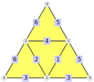
And there is exactly one multi-tetrahedral sphere with 6 faces namely the double tetraedron which can be obtained by performing exactly one tetrahedral extension to the tetradron.
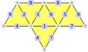
gap> IsMultiTetrahedralSphere(Tetrahedron()); true gap> vof:=[[1,2,4],[2,3,4],[1,3,4],[1,2,5],[1,3,5],[2,3,5]];; gap> doubleTetra:=SimplicialSurfaceByVerticesInFaces(vof); simplicial surface (5 vertices, 9 edges, and 6 faces) gap> IsMultiTetrahedralSphere(doubleTetra); true
As another example, consider the octahedron.
gap> IsMultiTetrahedralSphere(Octahedron()); false
‣ TetrahedralNumber( complex ) | ( attribute ) |
Returns: positive integer or fail
Return the number of tetrahedra that are used to construct the given twisted polygonal complex. If complex is a multi-tetrahedral sphere, this number is 1 greater than the number of tetrahedral extensions that have to be applied to the tetrahedron to obtain complex. If complex is not a multi-tetrahedral sphere, the function returns fail.
As example, consider the tetrahedron, the double tetrahedron and the multi-tetrahedral sphere which can be obtained by applying exactly two tetrahedral extensions to the tetrahedron.
gap> doubleTetra:=TetrahedralExtension(Tetrahedron(),1); simplicial surface (5 vertices, 9 edges, and 6 faces) gap> multiTetra:=TetrahedralExtension(doubleTetra,2); simplicial surface (6 vertices, 12 edges, and 8 faces) gap> TetrahedralNumber(Tetrahedron()); 1 gap> TetrahedralNumber(doubleTetra); 2 gap> TetrahedralNumber(multiTetra); 3
‣ TetrahedralType( complex ) | ( attribute ) |
Returns: a dense list or fail
Return the tetrahedral type of a given twisted polygonal complex or fail, if complex is not a multi tetrahedral sphere. The tetrahedral type of a multi tetrahedral sphere is a tuple [a0,...,ak] satisfying the following property: X is a list of multi tetrahedral spheres of length k so that X[1]=complex and X[k] is either isomorphic to the tetrahedron or the double tetrahedron. Furthermore X[i] is obtained by applying tetrahedral reductions to all vertices with face degree 3 in X[i-1]. So ai is the number of vertices with face degree 3 in X[i], if X[k] is isomorphic to the tetrahedron, the number ak is redefined as 1. As example, consider the tetrahedron, the double tetrahedron and the multi-tetrahedral sphere which can be obtained by applying exactly two tetrahedral extensions to the tetrahedron.
gap> doubleTetra:=TetrahedralExtension(Tetrahedron(),1); simplicial surface (5 vertices, 9 edges, and 6 faces) gap> multiTetra:=TetrahedralExtension(doubleTetra,2); simplicial surface (6 vertices, 12 edges, and 8 faces) gap> TetrahedralType(Tetrahedron()); [ 1 ] gap> TetrahedralType(doubleTetra); [ 2 ] gap> TetrahedralType(multiTetra); [ 2, 1 ]
‣ BlockType( surface ) | ( attribute ) |
Returns: list of pairs or fail
Return the block type of a vertex-faithful simplicial sphere. The block type is a list of pairs [num,numOfFaces] where num counts the building blocks(12.5-11) of surface whose number of faces match numOfFaces. Since building blocks only exist for vertex-faithful spheres the function returns fail, if surface does not satisfy this property.
As examples, consider the tetrahedron and the double tetrahedron.
gap> BlockType(Tetrahedron()); [ [ 4, 1 ] ] gap> vof:=[[1,2,4],[2,3,4],[1,3,4],[1,2,5],[1,3,5],[2,3,5]];; gap> doubleTetra:=SimplicialSurfaceByVerticesInFaces(vof); simplicial surface (5 vertices, 9 edges, and 6 faces) gap> BlockType(doubleTetra); [ [ 4, 2 ] ]
This section contains properties and invariants that are based on the degrees of the vertices. We have to distinguish two different definitions for the degree of a vertex - we can either count the number of incident edges of the number of incident faces. These two definitions are distinguished by calling them EdgeDegreesOfVertices and FaceDegreesOfVertices.
A large part of this chapter are the counters. There are six different counter objects: vertex counter(9.2-4), edge counter(9.2-5), face counter(9.2-6), butterfly counter(9.2-7), umbrella counter(9.2-8) and three face counter(9.2-9). For a given surface, the counters save information about the vertex, face or edge degrees. There are different methods to get these information like ListCounter(9.2-13), MultiplicitiesOfCounter(9.2-14) and DegreesOfCounter(9.2-15).
‣ EdgeDegreesOfVertices( complex ) | ( attribute ) |
‣ EdgeDegreeOfVertex( complex, vertex ) | ( operation ) |
‣ EdgeDegreeOfVertexNC( complex, vertex ) | ( operation ) |
Returns: a list of positive integers
The method EdgeDegreeOfVertex(complex, vertex) returns the edge-degree of the given vertex in the given twisted polygonal complex, i.e. the number of incident edges. The NC-version does not check whether vertex is a vertex of complex.
The attribute EdgeDegreesOfVertices(complex) collects all of these degrees in a list that is indexed by the vertices, i.e. EdgeDegreesOfVertices(complex)[vertex] = EdgeDegreeOfVertex(complex, vertex). All other positions of this list are not bound.
As an example, consider the five-star from the start of chapter 9:
gap> EdgeDegreeOfVertex( fiveStar, 1 ); 5 gap> EdgeDegreeOfVertex( fiveStar, 5 ); 3 gap> EdgeDegreesOfVertices( fiveStar ); [ 5, 3, 3,, 3,, 3,,,, 3 ]
‣ FaceDegreesOfVertices( complex ) | ( attribute ) |
‣ FaceDegreeOfVertex( complex, vertex ) | ( operation ) |
‣ FaceDegreeOfVertexNC( complex, vertex ) | ( operation ) |
‣ DegreesOfVertices( complex ) | ( attribute ) |
‣ DegreeOfVertex( complex, vertex ) | ( operation ) |
‣ DegreeOfVertexNC( complex, vertex ) | ( operation ) |
Returns: a list of positive integers
The method FaceDegreeOfVertex(complex, vertex) returns the face-degree of the given vertex in the given twisted polygonal complex, i.e. the number of incident faces. The NC-version does not check whether vertex is a vertex of complex.
The attribute FaceDegreesOfVertices(complex) collects all of these degrees in a list that is indexed by the vertices, i.e. FaceDegreesOfVertices(complex)[vertex] = FaceDegreeOfVertex(complex, vertex). All other positions of this list are not bound.
As an example, consider the five-star from the start of chapter 9:
gap> FaceDegreeOfVertex( fiveStar, 1 ); 5 gap> FaceDegreeOfVertex( fiveStar, 5 ); 2 gap> FaceDegreesOfVertices( fiveStar ); [ 5, 2, 2,, 2,, 2,,,, 2 ] gap> DegreesOfVertices( fiveStar ); [ 5, 2, 2,, 2,, 2,,,, 2 ]
For convenience, these methods can also be called by the names DegreesOfVertices and DegreeOfVertex.
‣ TotalDefect( surface ) | ( attribute ) |
‣ TotalInnerDefect( surface ) | ( attribute ) |
Returns: an integer
Return the total (inner) defect of the given simplicial surface. The defect of an inner vertex is \(6 - faceDegree\) and the defect of a boundary vertex is \(3 - faceDegree\).
The total defect is the sum over all defects. The total inner defect is the sum over the defects of all inner vertices. As an example, consider the five-star from the start of chapter 9:
gap> TotalDefect( fiveStar ); 6 gap> TotalInnerDefect( fiveStar ); 1
‣ CounterOfVertices( complex ) | ( operation ) |
Returns: A Counter-GAP-object
‣ IsCounterOfVertices( object ) | ( property ) |
Returns: true or false
The method CounterOfVertices constructs a new vertex counter from a polygonal complex. The method IsCounterOfVertices checks if a given GAP-object represents such a vertex counter. The vertex counter saves the information about how many vertices are incident to how many faces. To get this information there are different possibilities. For example, the method ListCounter (9.2-13) that returns this information as a list of pairs [degree, multiplicity], where multiplicity counts the number of vertices with exactly degree incident faces.
As an example, consider the five-star from the start of chapter 9:
gap> List( FacesOfVertices(fiveStar), Size ); [ 5, 2, 2,, 2,, 2,,,, 2 ] gap> countVert:=CounterOfVertices(fiveStar); counter of vertices ([ 2, 5 ] degrees, and [ 5, 1 ] multiplicities) gap> ListCounter(countVert); [ [ 2, 5 ], [ 5, 1 ] ]
‣ CounterOfEdges( complex ) | ( operation ) |
Returns: A Counter-GAP-object
‣ IsCounterOfEdges( object ) | ( property ) |
Returns: true or false
The method CounterOfEdges constructs a new edge counter from a polygonal complex. The method IsCounterOfEdges checks if a given GAP-object represents such an edge counter. The edge counter saves the information about how many edges have vertices with the same degrees. To get this information there are different possibilities. For example, the method ListCounter (9.2-13) that returns this information as a list of pairs [degreeList, multiplicity], where multiplicity counts the number of edges whose vertices are incident to degreeList[1] and degreeList[2] faces. The list degreeList is always sorted but may contain duplicates.
As an example, consider the five-star from the start of chapter 9:
gap> countEdg := CounterOfEdges(fiveStar); counter of edges ([ [ 2, 2 ], [ 2, 5 ] ] degrees, and [ 5, 5 ] multiplicities) gap> ListCounter(countEdg); [ [ [ 2, 2 ], 5 ], [ [ 2, 5 ], 5 ] ]
‣ CounterOfFaces( complex ) | ( operation ) |
Returns: A Counter-GAP-object
‣ IsCounterOfFaces( object ) | ( property ) |
Returns: true or false
The method CounterOfFaces constructs a new face counter from a polygonal complex. The method IsCounterOfFaces checks if a given GAP-object represents such a face counter. The face counter saves the information about how many faces have vertices with the same degrees. To get this information there are different possibilities. For example, the method ListCounter (9.2-13) that returns this information as a list of pairs [degreeList, multiplicity], where multiplicity counts the number of faces whose vertex degrees match degreeList, i.e. for every vertex there is exactly one entry of degreeList such that the vertex is incident to this number of faces. The degreeList is always sorted but may contain duplicates.
As an example, consider the five-star from the start of chapter 9:
gap> countFac:=CounterOfFaces(fiveStar); counter of faces ([ [ 2, 2, 5 ] ] degrees, and [ 5 ] multiplicities) gap> ListCounter(countFac); [ [ [ 2, 2, 5 ], 5 ] ]
‣ CounterOfButterflies( surface ) | ( operation ) |
Returns: A Counter-GAP-object
‣ IsCounterOfButterflies( object ) | ( property ) |
Returns: true or false
The method CounterOfButterflies constructs a new butterfly counter from a simplicial surface. The method IsCounterOfButterflies checks if a given GAP-object represents such a butterfly counter. The butterfly counter saves the information about how many butterflies have vertices with the same degrees. To get this information there are different possibilities. For example, the method ListCounter (9.2-13) that returns this information as a list of pairs [[degList1,degList2], multiplicity], where multiplicity counts the number of butterflies whose vertex degrees match [degList1,degList2], whereby degList1 denotes the vertex degree of the vertices that are incident to the edge inducing the corresponding butterfly and degList2 contains the vertex degrees of the two remaining vertices of the butterfly.
As an example, consider the double-5-gon: 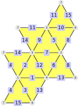
gap> vof:=[[1,4,5],[1,4,6],[1,5,7],[1,6,7],[2,3,5],[2,3,6],[2,4,5], > [2,4,6],[3,5,7],[3,6,7]];; gap> s:=SimplicialSurfaceByVerticesInFaces(vof);; gap> counter:=CounterOfButterflies(s); counter of butterlies ([ [ [ 4, 4 ], [ 5, 5 ] ], [ [ 4, 5 ], [ 4, 4 ] ] ] degrees, and [ 5, 10 ] multiplicities) gap> ListCounter(counter); [ [ [ [ 4, 4 ], [ 5, 5 ] ], 5 ], [ [ [ 4, 5 ], [ 4, 4 ] ], 10 ] ]
‣ CounterOfUmbrellas( surface ) | ( operation ) |
Returns: A Counter-GAP-object
‣ IsCounterOfUmbrellas( object ) | ( property ) |
Returns: true or false
The method CounterOfUmbrellas constructs a new umbrella counter from a simplicial surface. The method IsCounterOfUmbrellas checks if a given GAP-object represents such an umbrella counter. The umbrella counter saves the information about how many umbrellas have vertices with the same degrees. To get this information there are different possibilities. For example, the method (ListCounter 9.2-13) that returns this information as a list of pairs [degreeList, multiplicity], where multiplicity counts the number of umbrellas whose vertex degrees of vertices contained at the boundary of the umbrella match degreeList, i.e. for every vertex contained in the boundary of an umbrella there is exactly one entry of degreeList such that the vertex is incident to this number of faces. The list degreeList is not sorted but may contain duplicates.
As an example, consider the double-6-gon: 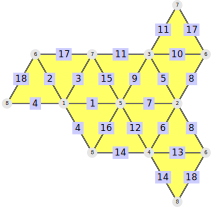
gap> vof:=[[1,5,7],[1,5,8],[1,6,7],[1,6,8],[2,3,5],[2,3,6],[2,4,5], > [2,4,6],[3,5,7],[3,6,7],[4,5,8],[4,6,8]];; gap> s:=SimplicialSurfaceByVerticesInFaces(vof);; gap> counter:=CounterOfUmbrellas(s); counter of umbrellas ([ [ 4, 6, 4, 6 ], [ 4, 4, 4, 4, 4, 4 ] ] degrees, and [ 6, 2 ] multiplicities) gap> ListCounter(counter); [ [ [ 4, 6, 4, 6 ], 6 ], [ [ 4, 4, 4, 4, 4, 4 ], 2 ] ]
‣ CounterOfThreeFaces( surface ) | ( operation ) |
Returns: A Counter-GAP-object
‣ IsCounterOfThreeFaces( object ) | ( property ) |
Returns: true or false
The method CounterOfThreeFaces constructs a new three face counter from a simplicial surface. The method IsCounterOfThreeFaces checks if a given GAP-object represents such a three face counter. The three-face counter saves the information about how many three-faces have vertices with the same degrees. To get this information there are different possibilities. For example, the method ListCounter (9.2-13) that returns this information as a list of pairs [[deg,degreeList1,degreeList2], multiplicity], whereby [deg,degreeList1,degreeList2] satisfies the following property: Assume that the vertices v1,v2,v3 are all incident to the same face and there exist exactly two vertices v4,v5 so that v4 resp. v5 is the remaining vertex of the butterfly induced by the edge incident to the vertices v1 and v2 resp.v1 and v3.
So deg denotes the vertex degree of the vertex v1. The first resp. second entry of degreeList1 is the vertex degree of v2 resp v3. And the first resp. second entry of degreeList2 is the vertex degree of v4 resp. v5. The integer multiplicity counts the number of adjacent three-faces whose vertex degrees match degreeList.
The different lists in degreeList are not sorted but may contain duplicates.
As an example, consider the double-6-gon:
gap> vof:=[[1,5,7],[1,5,8],[1,6,7],[1,6,8],[2,3,5],[2,3,6],[2,4,5], > [2,4,6],[3,5,7],[3,6,7],[4,5,8],[4,6,8]];; gap> s:=SimplicialSurfaceByVerticesInFaces(vof);; gap> counter:=CounterOfThreeFaces(s); counter of three faces ([ [ 4, [ 4, 6 ], [ 6, 4 ] ], [ 6, [ 4, 4 ], [ 4, 4 ] ] ] degrees, and [ 24, 12 ] multiplicities) gap> ListCounter(counter); [ [ [ 4, [ 4, 6 ], [ 6, 4 ] ], 24 ], [ [ 6, [ 4, 4 ], [ 4, 4 ] ], 12 ] ]
‣ IsCounter( object ) | ( property ) |
Returns: true or false
The method returns if the object is a vertex counter, edge counter, face counter, butterfly counter, umbrella counter or three face counter.
gap> IsCounter(CounterOfVertices(fiveStar)); true
‣ TypeOfCounter( counter ) | ( operation ) |
Returns the type of the counter. That means if counter is a CounterOfVertices(9.2-4), CounterOfEdges(9.2-5), CounterOfFaces(9.2-6), CounterOfButterflies(9.2-7), CounterOfUmbrellas(9.2-8), CounterOfThreeFaces(9.2-9) or a not specified counter object.
gap> counter:=CounterOfVertices(fiveStar);; gap> TypeOfCounter(counter); CounterOfVertices
‣ AssociatedPolygonalComplex( counter ) | ( attribute ) |
Returns: a polygonal complex
Return the polygonal complex for which the given counter is defined.
gap> assCom:=AssociatedPolygonalComplex(CounterOfVertices(fiveStar));; gap> IsIsomorphic(assCom, fiveStar); true
‣ ListCounter( counter ) | ( attribute ) |
Returns: a list of pairs
Returns the information about different counters. For a vertex counter the method returns the list of pairs [degree, multiplicity] for counter. For an edge counter, a face counter and an umbrella counter the method returns the list of pairs [degreeList, multiplicity]. For a butterfly counter the method returns the list of pairs [[degList1,degList2], multiplicity] and for a three face counter the method returns the list of pairs [[deg,degList1,degList2], multiplicity].
gap> countFac:=CounterOfFaces(fiveStar);; gap> ListCounter(countFac); [ [ [ 2, 2, 5 ], 5 ] ]
‣ MultiplicitiesOfCounter( counter ) | ( operation ) |
‣ MultiplicitiesOfDegrees( counterVert ) | ( operation ) |
‣ MultiplicityOfDegree( counter, degreeList ) | ( operation ) |
‣ MultiplicityOfDegree( counterVert, degree ) | ( operation ) |
Returns: a list of positive integers/a positive integer
The method Multiplicities returns the second entry of the tupels contained in the list obtained from ListCounter. This means, for example, that the method returns how many vertices have the same degree if counter is a vertex counter. The method MultiplicityOfDegree returns the number for the given degree or degreeList of counter. The method MultiplicitiesOfDegrees returns a list multiplicities for a vertex counter where multiplicities[i] is the number of times a vertex has degree i.
gap> counterEd:=CounterOfEdges(fiveStar);; gap> MultiplicitiesOfCounter(counterEd); [ 5, 5 ] gap> MultiplicityOfDegree(counterEd,[2,5]); 5 gap> counterVert:=CounterOfVertices(fiveStar);; gap> MultiplicitiesOfDegrees(counterVert); [ , 5,,, 1 ]
‣ DegreesOfCounter( counter ) | ( operation ) |
‣ DegreesOfMultiplicities( counter ) | ( operation ) |
‣ DegreesOfMultiplicity( counter, multiplicity ) | ( operation ) |
Returns: a list of positive integers
The method Degrees returns the first entry of tupels contained in the list obtained from ListCounter. This means, for example, that if counter is a vertex counter, the method returns what the different degrees of the vertices are. The method DegreesOfMultiplicities returns a list degrees for counter, where degrees[i] is the degree or degreeList that occurs i times.
gap> counterEd:=CounterOfEdges(fiveStar);; gap> DegreesOfCounter(counterEd); [ [ 2, 2 ], [ 2, 5 ] ] gap> DegreesOfMultiplicities(counterEd); [ ,,,, [ [ 2, 2 ], [ 2, 5 ] ] ] gap> DegreesOfMultiplicity(counterEd,5); [ [ 2, 2 ], [ 2, 5 ] ]
The faces in a (twisted) polygonal complex are (twisted) polygons. In particular there can be polygons with different numbers of vertices, i.e. triangle, quadrangles, and so on.
‣ IsFaceHomogeneous( complex ) | ( property ) |
Returns: true or false
Check whether all polygons in this twisted polygonal complex have the same number of vertices.
Consider the following polygonal complex:
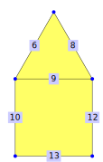
gap> complex := PolygonalComplexByDownwardIncidence( > [ , , , , , [2,5], , [2,3], [3, 5], [11,5], , [3,7], [7,11] ], > [[6,8,9], , , [9,10,12,13]]);; gap> IsFaceHomogeneous(complex); false
This complex is not face homogeneous, since it contains a face with three vertices and a face with four vertices. A tetrahedron is face homogeneous:
gap> IsFaceHomogeneous(Tetrahedron()); true
‣ IsTriangular( complex ) | ( property ) |
Returns: true or false
Check whether all polygons in this twisted polygonal complex are triangles. If this is the case, the twisted polygonal complex is face homogeneous.
The tetrahedron consists only of triangles:
gap> IsTriangular(Tetrahedron()); true
‣ IsQuadrangular( complex ) | ( property ) |
Returns: true or false
Check whether all polygons in this twisted polygonal complex are quadrangles.
Consider the following polygonal complex:
gap> complex := PolygonalComplexByDownwardIncidence( > [ , , , , , [2,5], , [2,3], [3, 5], [11,5], , [3,7], [7,11] ], > [[6,8,9], , , [9,10,12,13]]);; gap> IsQuadrangular(complex); false
This complex is not quadrangular, since it contains a triangle.
The edges of a twisted polygonal complex (defined in 2.1) can be in different local positions. This can be seen in the example of the five-star (which was introduced at the start of chapter 9):
The edges that are incident to the vertex 1 are different from the other edges since they lie "inside" the surface. Edges with two incident faces are called inner edges while edges with only one incident face are called boundary edges.
If edge ramifications are not allowed, only those two edge types can appear (by definition there are one or two faces incident to each edge). In general there might appear a third case (more than two faces incident to an edge). This is exemplified in the following example:
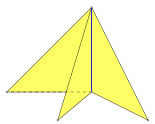
Edges with more than two incident faces are called ramified edges.
‣ InnerEdges( complex ) | ( attribute ) |
‣ IsInnerEdge( complex, edge ) | ( operation ) |
‣ IsInnerEdgeNC( complex, edge ) | ( operation ) |
Returns: a set of positive integers
Return the set of all inner edges of the given twisted polygonal complex. An inner edge is an edge that is incident to exactly two faces.
The method IsInnerEdge checks whether the given edge is an inner edge of the given twisted polygonal complex. The NC-version does not check whether edge is an edge of complex.
Consider the five-star from the start of chapter 9:
gap> IsInnerEdge( fiveStar, 4 ); true gap> IsInnerEdge( fiveStar, 10 ); false gap> InnerEdges( fiveStar ); [ 1, 2, 3, 4, 5 ]
‣ TurnableEdges( surface ) | ( attribute ) |
‣ IsTurnableEdge( surface, edge ) | ( operation ) |
‣ IsTurnableEdgeNC( surface, edge ) | ( operation ) |
Returns: a set of positive integers
Return the set of all turnable edges of the given simplicial surface. Let v1,v2 be the vertices of the subsurface induced by a given edge which are not incident to this edge.
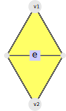
The given edge is a turnable edge, if and only if v1 is not equal to v2 and there exist no edge whose incident vertices are exactly v1 and v2. The method IsTurnableEdge checks whether the given edge is a turnable edge of the given simplicial surface. The NC-version does not check whether edge is an edge of surface.
gap> TurnableEdges(Tetrahedron()); [ ] gap> TurnableEdges(Octahedron()); [ 1, 2, 3, 4, 5, 6, 7, 8, 9, 10, 11, 12 ] gap> IsTurnableEdge(Tetrahedron(),1); false gap> IsTurnableEdge(Octahedron(),2); true
As another example surfaces with boundary edges can be considered.
gap> s:=SimplicialSurfaceByVerticesInFaces([[1,2,3],[1,2,4]]); simplicial surface (4 vertices, 5 edges, and 2 faces) gap> IsTurnableEdge(s,1); true gap> IsTurnableEdge(s,2); false gap> EdgesOfFaces(s); [ [ 1, 2, 4 ], [ 1, 3, 5 ] ]
‣ BoundaryEdges( complex ) | ( attribute ) |
‣ IsBoundaryEdge( complex, edge ) | ( operation ) |
‣ IsBoundaryEdgeNC( complex, edge ) | ( operation ) |
Returns: a set of positive integers
Return the set of all boundary edges of the given twisted polygonal complex. A boundary edge is an edge that is incident to exactly one face.
The method IsBoundaryEdge checks whether the given edge is a boundary edge of the given twisted polygonal complex. The NC-version does not check whether edge is an edge of complex.
Consider the five-star from the start of chapter 9:
gap> IsBoundaryEdge( fiveStar, 4 ); false gap> IsBoundaryEdge( fiveStar, 10 ); true gap> BoundaryEdges( fiveStar ); [ 6, 7, 8, 9, 10 ]
‣ RamifiedEdges( complex ) | ( attribute ) |
‣ IsRamifiedEdge( complex, edge ) | ( operation ) |
‣ IsRamifiedEdgeNC( complex, edge ) | ( operation ) |
Returns: a set of positive integers
Return the set of all ramified edges of the given twisted polygonal complex. A ramified edge is an edge that is incident to at least three faces.
The method IsRamifiedEdge checks whether the given edge is a ramified edge of the given twisted polygonal complex. The NC-version does not check whether edge is an edge of complex.
We illustrate it on the following triangular complex:
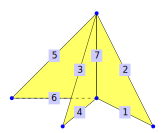
gap> branch := TriangularComplexByDownwardIncidence( > [[2,3],[1,3],[2,4],[1,4],[2,5],[1,5],[1,2]], > [[1,2,7],[3,4,7],[5,6,7]]);; gap> IsRamifiedEdge(branch, 1); false gap> IsRamifiedEdge(branch, 7); true gap> RamifiedEdges(branch); [ 7 ]
The vertices of a twisted polygonal complex (defined in 2.1) can be in different local positions. This can be seen in the example of the five-star (which was introduced at the start of chapter 9):
The vertex 1 is the only vertex that is completely surrounded by faces. It is called an inner vertex while the other vertices of the five-star are boundary vertices. This classifies all vertices of a twisted polygonal surface.
In general there are more than these two possibilities. In the case of vertex ramifications (defined in 2.3) there can be ramified vertices:
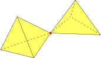
In the case of edge ramifications (also defined in 2.3) there might be edges that are incident to more than two faces.
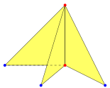
Vertices that are incident to such an edge are called chaotic vertices.
‣ InnerVertices( complex ) | ( attribute ) |
‣ IsInnerVertex( complex, vertex ) | ( operation ) |
‣ IsInnerVertexNC( complex, vertex ) | ( operation ) |
Returns: a set of positive integers
Return the set of all inner vertices.
A vertex is an inner vertex if and only if there is exactly one closed umbrella-path around it (compare section 3.4 for the definition of umbrella-paths).
The method IsInnerVertex checks whether the given vertex is an inner vertex of the given twisted polygonal complex. The NC-version does not check whether vertex is an vertex of complex.
Consider the five-star from the start of chapter 9:
gap> IsInnerVertex( fiveStar, 1 ); true gap> IsInnerVertex( fiveStar, 3 ); false gap> InnerVertices( fiveStar ); [ 1 ]
For the special case of a twisted polygonal surface the inner vertices have an easier characterisation: a vertex is an inner vertex if and only if every incident edge is incident to exactly two faces (that is, if it only incident to inner edges (9.4-1)).
‣ BoundaryVertices( complex ) | ( attribute ) |
‣ IsBoundaryVertex( complex, vertex ) | ( operation ) |
‣ IsBoundaryVertexNC( complex, vertex ) | ( operation ) |
Returns: a set of positive integers
Return the set of all boundary vertices.
A vertex is a boundary vertex if and only if there is exactly one non-closed umbrella-path around it (compare section 3.4 for the definition of umbrella-paths).
The method IsBoundaryVertex checks whether the given vertex is a boundary vertex of the given twisted polygonal complex. The NC-version does not check whether vertex is an vertex of complex.
Consider the triforce from the start of section 9:
gap> IsBoundaryVertex( triforce, 6 ); true gap> IsBoundaryVertex( triforce, 2 ); false gap> BoundaryVertices( triforce ); [ 1, 4, 6 ]
For twisted polygonal surfaces the boundary vertices can be described more easily: a vertex is a boundary vertex if and only if it is incident to at least one edge that is incident to exactly one face (i.e. if it is incident to a boundary edge (9.4-3)).
Consider the five-star from the start of section 9:
gap> IsBoundaryVertex( fiveStar, 5 ); true gap> IsBoundaryVertex( fiveStar, 1 ); false gap> BoundaryVertices( fiveStar ); [ 2, 3, 5, 7, 11 ]
‣ RamifiedVertices( complex ) | ( attribute ) |
‣ IsRamifiedVertex( complex, vertex ) | ( operation ) |
‣ IsRamifiedVertexNC( complex, vertex ) | ( operation ) |
Returns: a set of positive integers
Return the set of all ramified vertices.
A vertex is ramified if and only if there is a well-defined umbrella-path partition around it (compare 3.4-2) and there are at least two umbrella-paths in this partition.
The method IsRamifiedVertex checks whether the given vertex is a ramified vertex of the given twisted polygonal complex. The NC-version does not check whether vertex is an vertex of complex.
Consider the triforce from the start of section 9:
gap> IsRamifiedVertex( triforce, 3 ); true gap> IsRamifiedVertex( triforce, 4 ); false gap> RamifiedVertices( triforce ); [ 2, 3, 5 ]
‣ ChaoticVertices( complex ) | ( attribute ) |
‣ IsChaoticVertex( complex, vertex ) | ( operation ) |
‣ IsChaoticVertexNC( complex, vertex ) | ( operation ) |
Returns: a set of positive integers
Return the set of all chaotic vertices.
A vertex is chaotic if and only if it is incident to an edge that is incident to at least three faces. In other words, there is no well-defined umbrella-path partition (3.4-2) around a chaotic vertex.
The method IsChaoticVertex checks whether the given vertex is a chaotic vertex of the given twisted polygonal complex. The NC-version does not check whether vertex is an vertex of complex.
As an example, we consider the following triangular complex:
gap> branch := TriangularComplexByDownwardIncidence( > [[2,3],[1,3],[2,4],[1,4],[2,5],[1,5],[1,2]], > [[1,2,7],[3,4,7],[5,6,7]]);; gap> IsChaoticVertex(branch, 1); true gap> IsChaoticVertex(branch, 3); false gap> ChaoticVertices(branch); [ 1, 2 ]
‣ FaceTwoColouring( complex ) | ( attribute ) |
Returns: a pair where the first and second entry are sets of positive integers or fail
If the method is given a polygonal complex, it returns a pair of two sets of faces, which represents a face-2-coloring, if possible. A 2-face-colouring of a polygonal complex is a colouring of the faces with exactly two colours, whereby two neighbouring faces have to be coloured different. If no such coloring exists, the method returns fail. In the case that such a colouring exists, the first set of the returned pair contains the face with the smallest label.
As an example, consider the octahedron.
gap> FaceTwoColouring(Octahedron()); [ [ 1, 2, 5, 6 ], [ 3, 4, 7, 8 ] ]
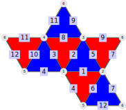
‣ AdmissibleRelationsOfSurface( surface, bool[, bool2] ) | ( operation ) |
Returns: a list of tuples where the first entry is a surface and the second entry is a list of partitions
An admissible relation of a simplicial surface is an equivalence relation on the surface satisfying the following properties:
Each equivalence class contains either vertices, edges or faces only.
We can define an incidence relation as follows: Let K and L be two equivalence classes. The class K is incident to the class L if and only if there exist k in the class K and l in the class L so that k is incident to l as elements of the given simplicial surface.
The equivalence classes together with the introduced relation gives rise to a triangulated surface without ramifications.
Note, let X be a simplicial surface and Y be a simplicial constructed by an admissible relation on X. Then there exists an epimorphism from X to Y. This functions focuses on the admissible relations that yield butterfly friendly epimorphisms. Here, an epimorphism from a simplicial surface X to another simplicial surface Y is called butterfly friendly, if for each inner edge e, the restriction of the epimorphism to the butterfly induced by e is surjective. This function returns a list of tuples [s,relation], where s is a simplicial surface and relation is the admissible relation of the given surface that gives rise to the resulting surface X. The relation relation is given by the resulting partition of vertices, edges and faces. If bool=true then the list which is returned by the function contains all surfaces that can be constructed by forming an admissible relation of the given surface and if bool=false then the list only contains isomorphism representatives with their corresponding admissible relations. If bool2=false then the function prints how many faces are already visited while computating the admissible relations. As an example, consider the tetrahedron.
gap> AdmissibleRelationsOfSurface(Tetrahedron(),true); [ [ simplicial surface (4 vertices, 6 edges, and 4 faces) , [ [ [ 1 ], [ 2 ], [ 3 ], [ 4 ] ], [ [ 1 ], [ 2 ], [ 3 ], [ 4 ], [ 5 ], [ 6 ] ], [ [ 1 ], [ 2 ], [ 4 ], [ 3 ] ] ] ] ]
As an example, consider the butterfly.
gap> butterfly:=SimplicialSurfaceByVerticesInFaces([[1,2,3],[2,3,4]]);; gap> AdmissibleRelationsOfSurface(butterfly,false); [ [ simplicial surface (4 vertices, 5 edges, and 2 faces) , [ [ [ 1 ], [ 2 ], [ 3 ], [ 4 ] ], [ [ 1 ], [ 2 ], [ 3 ], [ 4 ], [ 5 ] ], [ [ 1 ], [ 2 ] ] ] ], [ simplicial surface (3 vertices, 3 edges, and 1 faces), [ [ [ 1, 4 ], [ 2 ], [ 3 ] ], [ [ 1, 4 ], [ 2, 5 ], [ 3 ] ], [ [ 1, 2 ] ] ] ] ]
generated by GAPDoc2HTML